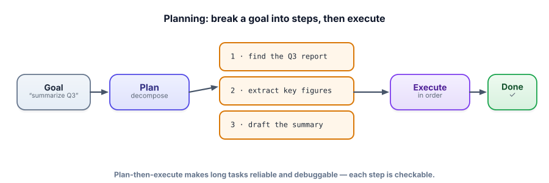

Planning & decomposition
Reactive loops can wander on big goals — taking a step, then another, hoping to stumble toward done. Planning fixes that: break the goal into explicit sub-tasks first, then execute them. It makes long tasks more reliable, debuggable, and sometimes parallelizable.
Why plan instead of just react
The ReAct loop is great for tasks where each step reveals the next. But for a goal like “produce a competitive analysis of three products,” a purely reactive agent can lose the thread — forgetting a competitor, repeating work, or rambling. Planning adds a step where the model first decomposes the goal into an ordered list of sub-tasks, then works through them. You get structure you can inspect (“is this plan sensible before we spend money executing it?”), a natural place to track progress, and the option to run independent sub-tasks in parallel.

Decomposition is breaking a goal into smaller sub-tasks. Planning is producing an ordered set of those sub-tasks before (or alongside) execution. Plan-then-execute makes the plan once up front and runs it; plan-and-reflect (or replanning) re-checks progress after steps and revises the plan when reality diverges. The right choice depends on how predictable the task is.
Three planning patterns
| Pattern | How it works | Best when |
|---|---|---|
| Plan-then-execute | Make the full plan, then run each step | The steps are predictable up front |
| Least-to-most | List sub-problems, solve simplest first, build up | Hard problems that decompose into easier ones |
| Plan-and-reflect | Plan, execute a step, re-evaluate, replan as needed | Open-ended tasks where results surprise the plan |
Ask the model for a plan as structured data, inspect it, then run each step. Separating planning from execution is what makes the agent debuggable.
import json, ollama
def make_plan(goal):
prompt = f'Break this goal into 2-5 ordered steps. Return JSON: {{"steps": ["...", "..."]}}.\nGoal: {goal}'
out = ollama.chat(model="llama3.2",
messages=[{"role":"user","content":prompt}], format="json")["message"]["content"]
return json.loads(out)["steps"]
def run_planned_agent(goal):
plan = make_plan(goal)
print("PLAN:", plan) # inspect before executing — cheap insurance
results = []
for i, step in enumerate(plan, 1):
# execute each step with the agent loop from 4.3 (tools available)
r = run_agent(f"Step {i} of the plan for '{goal}': {step}", tool_schemas)
results.append(r)
# final synthesis
return ask(f"Goal: {goal}. Step results: {results}. Write the final deliverable.")
print(run_planned_agent("Compare the warranties of the X200 and X300 blenders"))Because the plan is explicit data, you can log it, validate it, even let a human approve it before any tools run. That inspectability is the whole point of planning.
- Planning decomposes a goal into ordered sub-tasks before executing — structure you can inspect.
- Plan-then-execute suits predictable tasks; plan-and-reflect suits open-ended ones where results surprise the plan.
- An explicit plan gives you progress tracking, debuggability, human approval, and possible parallelism.
- Don’t over-plan: simple tasks just need the reactive loop — planning adds value as goals get longer and more open.
- The best agents combine planning (structure) with reactive execution (adaptivity).
An agent is asked to “book the cheapest flight, then add it to my calendar.” Halfway through, the booking API returns “sold out.” A rigid plan-then-execute agent fails. What design would handle this better?
1. Decompose “write a launch blog post about our new feature” into 3–5 sub-tasks. Which could run in parallel?
2. Give a task where plan-then-execute is ideal and one where plan-and-reflect is necessary.
3. Why is letting a human approve the plan often safer and cheaper than approving each action?
▸ Show solutions & reasoning
1. e.g., (1) gather the feature’s key points, (2) draft an outline, (3) write the post, (4) write a title + meta description, (5) suggest social snippets. Steps 4 and 5 depend on 3, but once the post exists they’re independent of each other and could run in parallel. Spotting independent sub-tasks is how you parallelize and speed up agents.
2. Plan-then-execute: “generate a monthly report from these three known data sources” — the steps are fixed and predictable. Plan-and-reflect: “investigate why this server’s latency spiked last night” — each finding changes what you look at next, so the plan must evolve with the evidence.
3. Approving the plan is one cheap, high-level review of intent before any tools run or money is spent — you catch a bad approach early. Approving every action is slow, interrupts the agent constantly, and still happens after some work is done. Plan-level approval gives oversight at the right altitude; you reserve per-action approval for the few genuinely dangerous steps (Lesson 4.8).
For richer agents, a plan isn’t a flat list but a task graph (a DAG): sub-tasks with dependencies, so the system can run independent branches in parallel and only block where one task truly needs another’s output. This is how serious agent frameworks schedule work — “research competitor A, B, and C” fan out concurrently, then a “synthesize” node waits for all three. Thinking in dependencies, not just sequence, is what unlocks both speed and clarity.
The trap to avoid is plan brittleness: a beautifully detailed plan made before the agent has seen any real data is a confident guess, and confident guesses about an uncertain world go stale fast. The mature pattern is “plan loosely, reflect often” — sketch enough structure to stay organized, but treat the plan as revisable and re-check it against observations as you go. Over-planning upfront is the agent equivalent of writing a 50-page spec before talking to a user. Structure where it helps, adaptivity where reality intervenes — that balance is the craft of agent planning.
Plans and loops both rely on the agent remembering what it has done and learned. But the context window is small and forgetful. Next: memory.